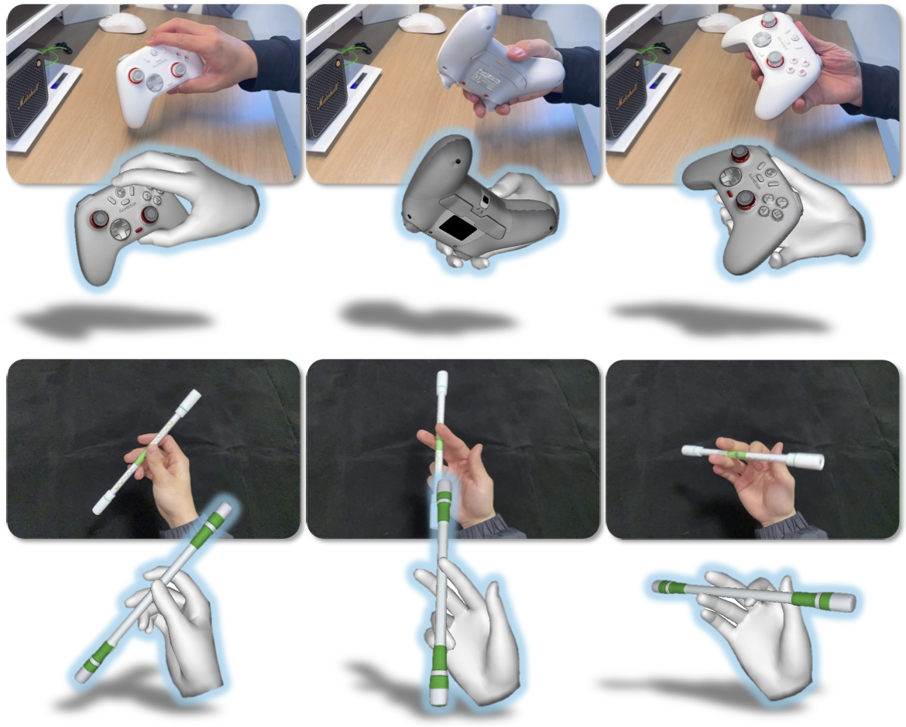
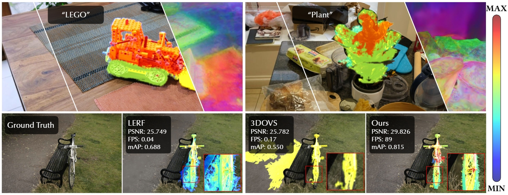
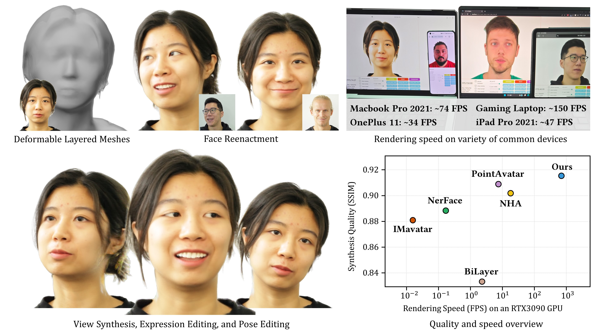

I am currently a Ph.D. student at Zhejiang University, advised by Prof. Chunhua Shen and Prof. Hao Chen. My research centers on reconstruction and manipulation — reconstructing hand–object interaction from video and retargeting it into physically consistent simulation. My goal is to build scalable, efficient, and robust systems that turn Internet-scale human videos into high-quality manipulation data, and, on top of it, robot learning systems that unify perception and dexterous manipulation toward reliable general-purpose robots in the real world.
I received my B.Eng. and M.Eng. degrees from Beihang University, where I was fortunate to work with Prof. Miao Wang and Prof. Shimin Hu.


